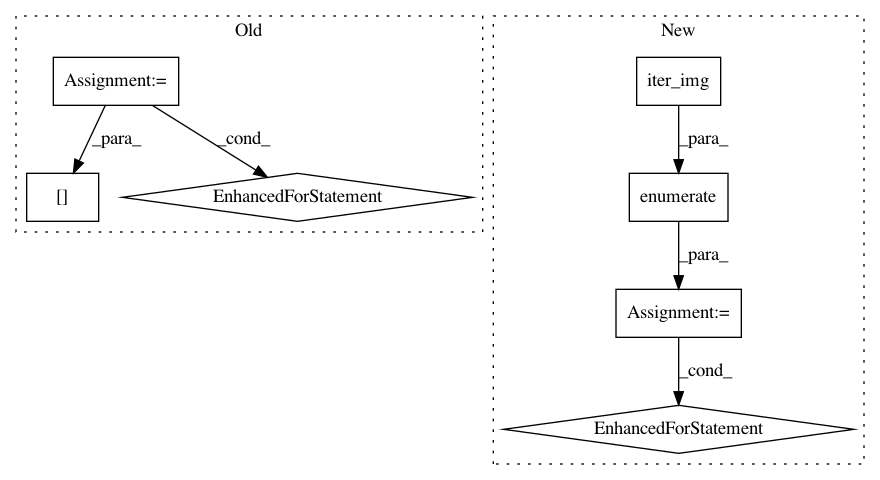

989ee60856e201cb7bdd0c6c585834e18d528046,examples/03_connectivity/plot_compare_decomposition.py,,,#,30
Before Change
names = {dict_learning: "DictionaryLearning", canica: "CanICA"}
components_imgs = []
for estimator in estimators:
print("[Example] Learning maps using %s model" % names[estimator])
estimator.fit(func_filenames)
print("[Example] Saving results")
// Grab extracted components umasked back to Nifti image.
// Note: For older versions, less than 0.4.1. components_img_
// is not implemented. See Note section above for details.
components_img = estimator.components_img_
components_img.to_filename("%s_resting_state.nii.gz" %
names[estimator])
components_imgs.append(components_img)
//////////////////////////////////////////////////////////////////////////////////////////////////////////////////////////////////////////////////////////////
// Visualize the results
// ----------------------
from nilearn.plotting import (plot_prob_atlas, find_xyz_cut_coords, show,
plot_stat_map)
from nilearn.image import index_img
After Change
from nilearn.image import iter_img
from nilearn.plotting import plot_stat_map, show
for i, cur_img in enumerate(iter_img(canica_components_img)):
plot_stat_map(cur_img, display_mode="z", title="IC %d" % i,
cut_coords=1, colorbar=False)
show()
////////////////////////////////////////////////////////////////////////////////////////////////////////////////////////////////////////
In pattern: SUPERPATTERN
Frequency: 3
Non-data size: 7
Instances
Project Name: nilearn/nilearn
Commit Name: 989ee60856e201cb7bdd0c6c585834e18d528046
Time: 2019-04-16
Author: jacobwvogel@gmail.com
File Name: examples/03_connectivity/plot_compare_decomposition.py
Class Name:
Method Name:
Project Name: nilearn/nilearn
Commit Name: f816b2d21de51ea97a45d8cbece6a528848c56e4
Time: 2019-04-18
Author: gael.varoquaux@normalesup.org
File Name: examples/03_connectivity/plot_compare_decomposition.py
Class Name:
Method Name:
Project Name: nilearn/nilearn
Commit Name: 45dfe409dfbd666d807ed62d025cb5ebaa911a43
Time: 2015-01-31
Author: danilobzdok@gmail.com
File Name: examples/connectivity/plot_canica_resting_state.py
Class Name:
Method Name: